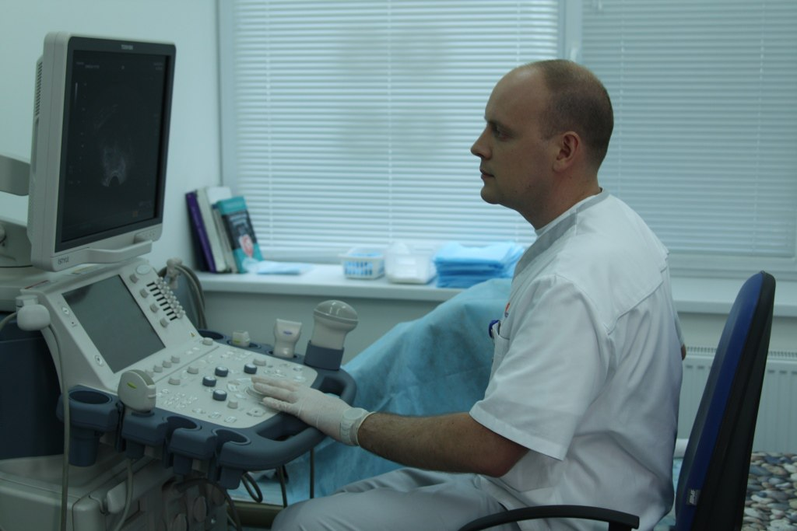
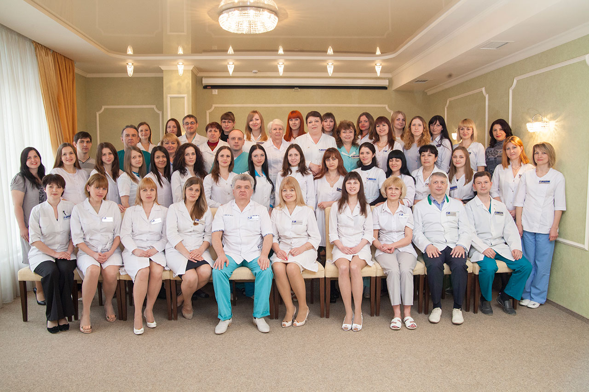

Study and career

The first acquaintance with medicine began in 1997 after entering the Luhansk Medical and Biological Lyceum, which he graduated in 2000. During his studies at the lyceum, the future doctor, not yet knowing that he would connect his life with obstetrics and gynecology, actively studied biology and chemistry. He took part in the All-Ukrainian Chemistry Olympiads: in 1998 he took 5th place in the team Olympiad, in 1999 - 7th place.
From 2000 to 2006 he studied at Luhansk Medical University. During his studies from 2003 to 2006 he worked as a nurse at the Luhansk Regional Psychoneurological Hospital.
From 2006 to 2009 he passed an internship in obstetrics and gynecology at the Luhansk Regional Clinical Hospital.
In 2008, due to lack of staff, he worked as the only obstetrician-gynecologist of Novoaydar district of Luhansk region, worked as a district obstetrician-gynecologist, while being a doctor of gynecology and obstetrics, leading an outpatient appointment at the clinic and working in an emergency room. .
From 2009 to 2014 he worked as an obstetrician-gynecologist for emergency care in the gynecological department of Luhansk City Multidisciplinary Hospital №2, from 2013 - responsible doctor on shift.
From 2010 to 2011 he additionally worked in Lugansk in the private hospital "Medakom", conducted outpatient care, engaged in pregnancy management, treatment of infertility, pelvic inflammatory disease, treatment of menstrual disorders.
In 2010 he studied at the course of TU "Endoscopic Surgery" on the basis of Donetsk National Medical University. N. Gorky.
In 2011 he listened to lectures and passed the test on "clinical transfusiology and prevention of post-transfusion complications" on the basis of Lugansk regional blood transfusion station.
In 2011 he received category 2 in specialty obstetrics and gynecology.

From 2011 to 2012 he worked part-time in the maternity ward of the Luhansk Regional Clinical Hospital as an obstetrician-gynecologist on duty at night, gave birth, performed a caesarean section.
From 2011 to 2014 he worked at the private clinic "New Medical Technologies" in Lugansk as a gynecologist. In the clinic he mastered the endoscopic specialty. He began to perform laparoscopic, hysteroscopic operations.
Since 2014 specialist doctor in the specialty Ultrasound diagnostics.

Work and study in Kharkiv


From 2014 to 2016 he worked as a doctor of the operating room in the IVF center of Professor Feskov OM ®, Kharkiv.
In addition to surgical treatment of infertility, he was actively involved in the treatment of pelvic endometriosis and uterine leiomyoma. Conducted laparoscopic removal of uterine nodes, laparoscopic extirpations in giant uterine fibroids, was engaged in surgical correction of pelvic prolapse and urinary incontinence.
In 2015 he studied at the TU "Colposcopy in the diagnosis of precancerous and tumorous conditions of the cervix" at the Kharkiv Medical Academy of Postgraduate Education.
In 2015 he received 1 category in specialty "Obstetrics and Gynecology"
Work and study in Kyiv
Since 2016, he has been the head of the inpatient department of operative interventions of the Omega-Kyiv Medical Center.
From 2018 specialist doctor in the specialty "Oncogynecology".
Since 2019, member of ESGE (European Society for Gynecological Endoscopy).

In 2020 he received the highest category in "Obstetrics and Gynecology"
The doctor's professional interests include the treatment of infertility, endometriosis, uterine leiomyoma, pathological processes in the uterine cavity, lowering of the genitals and surgical correction of urinary incontinence, cosmetic labia.
Dr. Stryzhakov successfully performs laparoscopic operations for giant fibroids, tumors of the uterine appendages. Carries out laparoscopic removal of fibromatous nodes on the uterus of different sizes and locations.
In the treatment of endometriosis, the doctor carefully treats the ovarian tissue, removes cysts with the maximum preservation of healthy ovarian tissue and removes the spread of endometriosis in the peritoneum of the pelvis.


{kind=link}